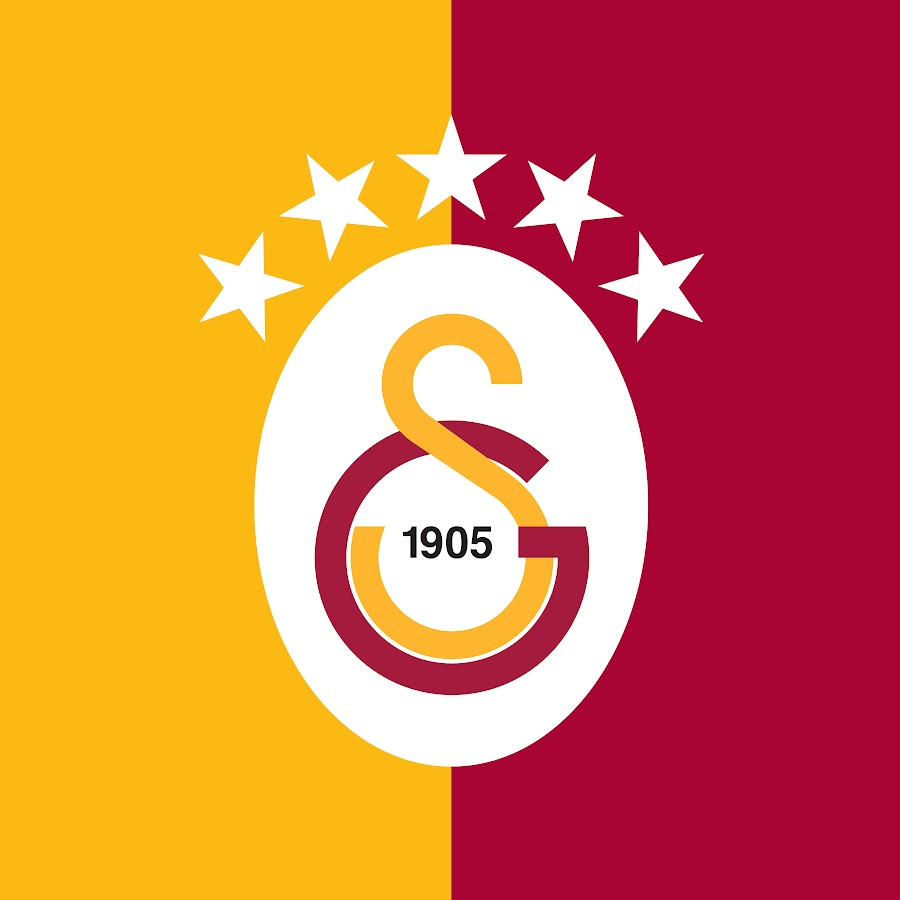

Galatasaray Spor Kulübü wurde 1905 in Istanbul gegründet. Der Verein ist besonders für seine Fussballmannschaft bekannt, hat aber auch Abteilungen in weiteren Sportarten.
Die Farben Rot und Gelb gehören fest zur Identität des Klubs. Heimspiele und die Unterstützung der Fans sorgen für eine besondere Atmosphäre, die viele Menschen mit Galatasaray verbinden.
Tore: 0
